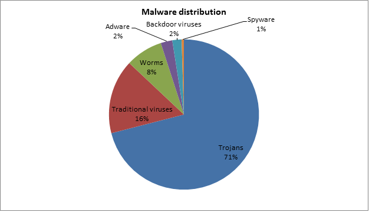

why is it called the Trojan horse virus?
Trojan malware was named after the Trojan Horse that ancient Greeks used to infiltrate the city of Troy. The wooden horse was perceived as a gift to the Trojans, but it was a ploy to sneak Greek soldiers behind the Trojan walls and ultimately win the war.

Facts about the trojan horse virus
Did you know that there are actually 7 types of trojan horse viruses?
1. Remote Access Trojans
2. Data Sending Trojans
3. Destructive Trojans
4. Proxy Trojans
5. File Transfer Protocol(FTP) Trojans
6. Security software disabler trojans
7. Denial-of-service attack (DoS) Trojans
The virus itself was actually created in 1957 by a programmer John Walker

Currently, the Trojan Horse virus accounts for 71% of the world wide malware distribution
>